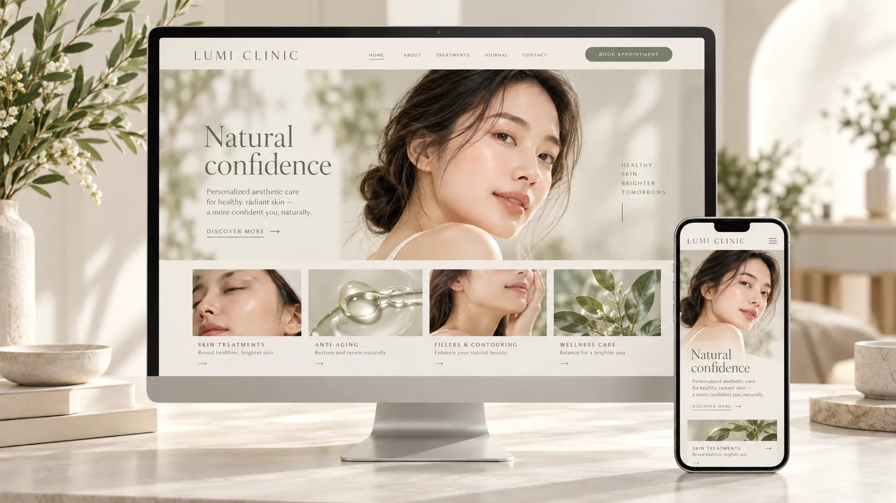

SOCIAL ONLY
ช่องทางสร้างการรับรู้
f◎♪
Facebook · Instagram · TikTok
คนรู้จักเราผ่านโพสต์
ช่วยสร้างความสนใจและพูดคุยกับลูกค้า แต่รายละเอียดสำคัญของธุรกิจอาจกระจายอยู่ในหลายโพสต์
รับออกแบบและสร้างเว็บไซต์สำหรับคลินิกและธุรกิจ ให้ภาพลักษณ์น่าเชื่อถือ ใช้งานง่ายบนทุกหน้าจอ มีข้อมูลครบ และพร้อมต่อยอดเป็นระบบจัดการงานของคุณ

เพราะลูกค้าไม่ได้เริ่มจากการเลื่อนฟีดเสมอไป บางคนเริ่มจากการค้นหาบริการใน Google หรือถาม AI ว่าควรไปที่ไหน
ช่วยสร้างความสนใจและพูดคุยกับลูกค้า แต่รายละเอียดสำคัญของธุรกิจอาจกระจายอยู่ในหลายโพสต์
เว็บไซต์รวมข้อมูลจริงไว้ในที่เดียว ให้ระบบค้นหาเข้าถึงและเข้าใจบริการของเราได้ชัดเจนขึ้น
บริการ ทีมงาน ที่ตั้ง คำถามที่ลูกค้าสงสัย
มีโอกาสแสดงเว็บเมื่อคำค้นเกี่ยวข้อง
ใช้เป็นแหล่งข้อมูลประกอบคำตอบพร้อมลิงก์ได้
ดีไซน์หลากหลายสไตล์ ที่ปรับให้เข้ากับภาพลักษณ์และวิธีทำงานของธุรกิจ
นำเสนอบริการคลินิกอย่างเป็นระบบ พร้อมช่องทางให้ลูกค้าติดต่อได้สะดวก
ไม่ใช่แค่หน้าตาสวย แต่ต้องช่วยให้คนเข้าใจธุรกิจของคุณ และรู้ว่าจะติดต่อคุณอย่างไร
ออกแบบสี ตัวอักษร และการจัดวางให้เหมาะกับแบรนด์ ไม่ใช้หน้าตาเดียวกันทุกธุรกิจ
จัดลำดับเนื้อหาให้อ่านง่ายบนมือถือ แท็บเล็ต และหน้าจอคอมพิวเตอร์
เริ่มจากเว็บไซต์แนะนำธุรกิจ แล้วค่อยเพิ่มระบบลูกค้าและระบบจัดการตามความต้องการ
ต่อยอดจากระบบคลินิกของเรา โดยเลือกฟังก์ชันและปรับตามวิธีทำงานของธุรกิจคุณ
แจ้งขอบเขตและราคาก่อนเริ่มงาน
เลือกเฉพาะบริการที่ธุรกิจต้องการ พร้อมเสนอราคาและขอบเขตงานให้ชัดเจนก่อนเริ่ม
คุยความต้องการ → รวบรวมรูปและข้อมูล → เสนอแบบและสร้างเว็บ → ตรวจงานร่วมกัน → เปิดใช้และส่งมอบ ก่อนเริ่มจะตกลงระยะเวลา จำนวนรอบแก้ไข และค่าใช้จ่ายให้ชัดเจนค่ะ
เว็บไซต์ช่วยรวบรวมข้อมูลสำคัญให้ลูกค้าดูได้เป็นสัดส่วน และใช้เป็นลิงก์กลางจากเพจ โฆษณา หรือช่องทางอื่นได้ โดยยังใช้งาน Facebook ควบคู่กันตามปกติค่ะ
เราจัดข้อมูลบริการ ที่ตั้ง และเรื่องที่ลูกค้าสนใจให้อ่านง่ายและระบบค้นหาเข้าถึงได้ เพื่อเพิ่มโอกาสให้เว็บไซต์ปรากฏในผลค้นหาที่เกี่ยวข้อง หรือเป็นแหล่งข้อมูลประกอบคำตอบจาก AI Search ค่ะ
รับเว็บไซต์สำหรับคลินิก ธุรกิจบริการ และแบรนด์ทั่วไป โดยปรับโครงสร้างและเนื้อหาให้ตรงกับธุรกิจ ส่วนระบบหลังบ้านจะประเมินความเหมาะสมตามงานของแต่ละธุรกิจค่ะ
เตรียมชื่อธุรกิจ โลโก้ รูปภาพ ข้อมูลบริการ ที่ตั้ง และช่องทางติดต่อ หากยังมีเนื้อหาไม่ครบ เราคุยแนวทางจัดข้อมูลร่วมกันได้ ระยะเวลาจะแจ้งหลังสรุปจำนวนหน้าและฟังก์ชันค่ะ
ได้ค่ะ เราวางเว็บไซต์เป็นจุดเริ่มต้น และคุยการต่อยอดระบบตามความต้องการภายหลัง โดยประเมินงานและค่าใช้จ่ายเพิ่มเติมก่อนเริ่มค่ะ
สิทธิ์ในงาน การถือครองโดเมน การส่งมอบไฟล์ และค่าใช้จ่ายต่อเนื่องจะระบุในข้อตกลงก่อนเริ่มงาน เพื่อให้คุณทราบว่าได้รับอะไรและมีค่าบริการส่วนใดบ้างค่ะ
ทุกธุรกิจมีโจทย์ไม่เหมือนกัน เล่าเป้าหมายของคุณ แล้วเริ่มต้นวางเว็บไซต์ที่เหมาะกับงบและการทำงานได้เลย